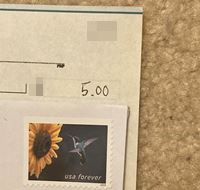
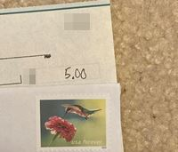
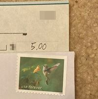
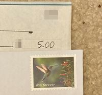
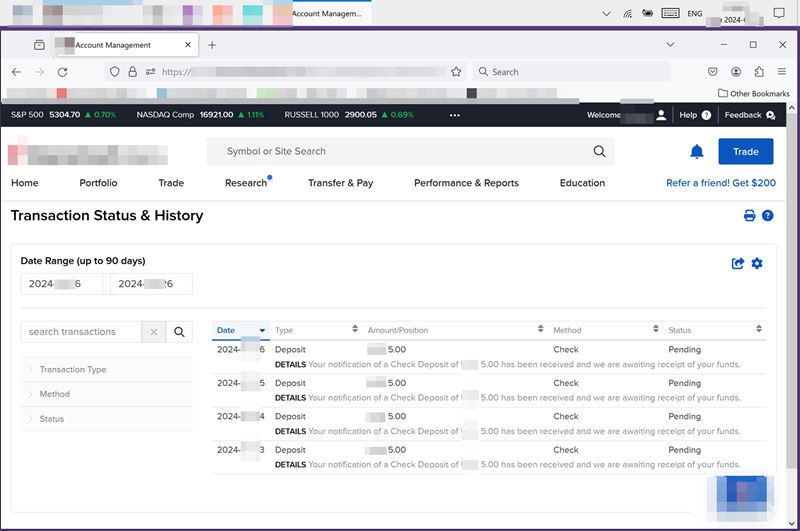
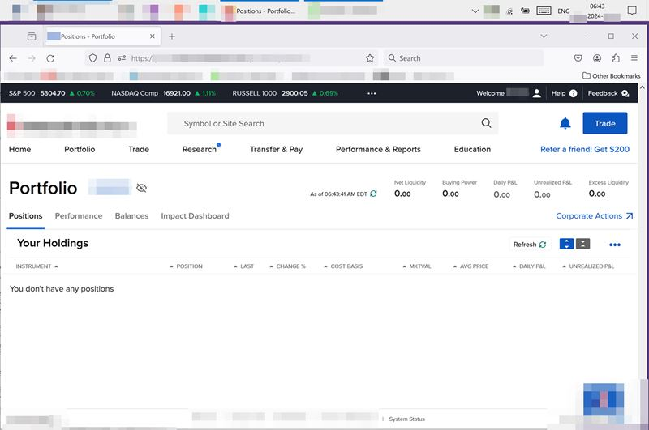
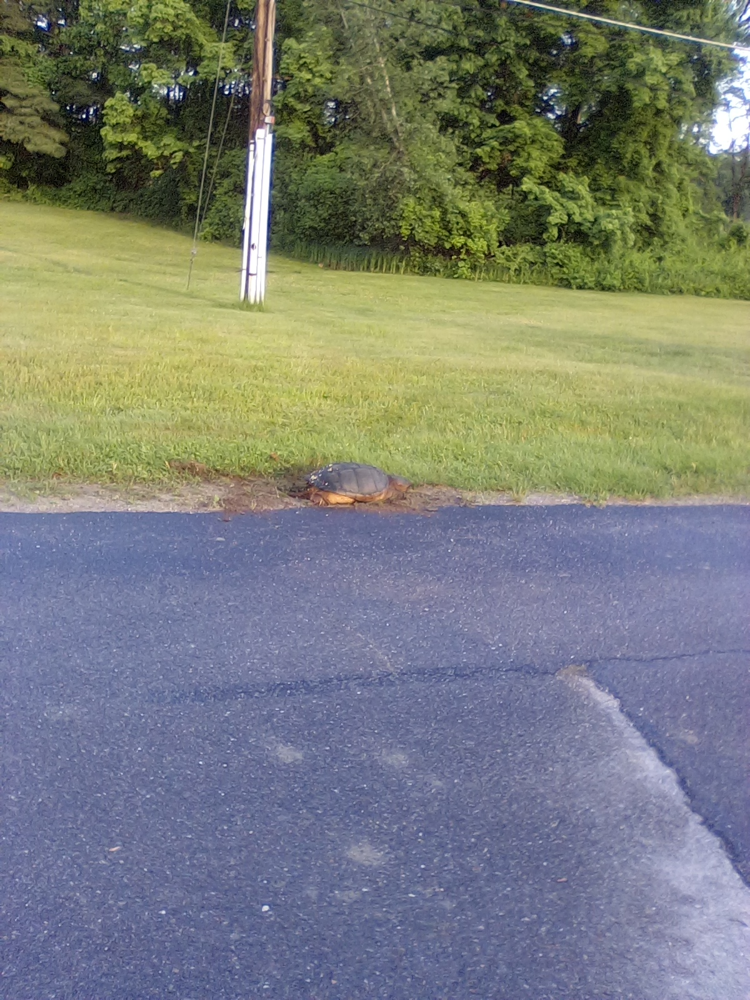

Copyright © under a triple license to the individual author and to lemonmama.com and to public domain.
Affilate statement: We may have interest, and or may be earning commissions.
0023 Bought a Company 005
0023 - I Bought a Company (day -194) [or I Bought a Company show #005] 我買了一個公司(從今天起194天)
I want to buy ¤5 of a company each day.
To get healthier, wealthier, and wiser.
Build discipline and make my life better.
In my opinion, it is better to each day first buy a part of a company, before buying, or instead of buying, any other extra stuff such as ¤5 cups of coffee or ¤5 containers of wine or ¤5 scratch tickets.
And so, here are the newest updates:
• Today I sent ¤5 for deposit to my brokerage for my brokerage account:

• Yesterday I also sent ¤5 for deposit to my brokerage for my brokerage account.

• Day before yesterday also ¤5:

• And three days ago I also mailed ¤5:

Further, I checked my brokerage online portal dashboard to see if any of my checks got there yet, and to see if the funds are available yet or not to see if I can start buying parts of a company yet or not.
I found that no, no funds are yet available.
But this makes sense. As I only started sending checks 7 days ago, and it takes a week for the check to get there, and then it takes 10 days after that for the check funds to become available. fine.
Here is screenshot of my transfer history on online brokerage account portal:

Here is a screenshot of my positions (that is the stocks/companies that I bought so far). Of course it is empty right now. Here:

Finally, today when mailing the letter I did see three separate snapping turtles laying eggs. They are going nuts about laying eggs today. This is a picture of one of them:

In conclusion, I did continue prepping to buy part of a company each day ongoing, towards trying to make my life healthier, wealthier, and wiser.
Note to readers: Do your own research and make your own choices. Don't do anything just because you saw me or someone else do it. I'm not recommending you do any of this, this is foremost for entertainment and for learning. 提醒讀者 自己研究自己決定 我沒有建議你去行動以上的意見 這都是為了樂趣跟為了學習
See previous: 更多以前寫的有關係的文章在這裡
#0006 - I Bought a Company (day -198) 我買了一個公司(從現在起198天)
2024-07-31 by author Morgan Jassen on lemonmama.com
{kind=link}
{kind=link}
{kind=link}